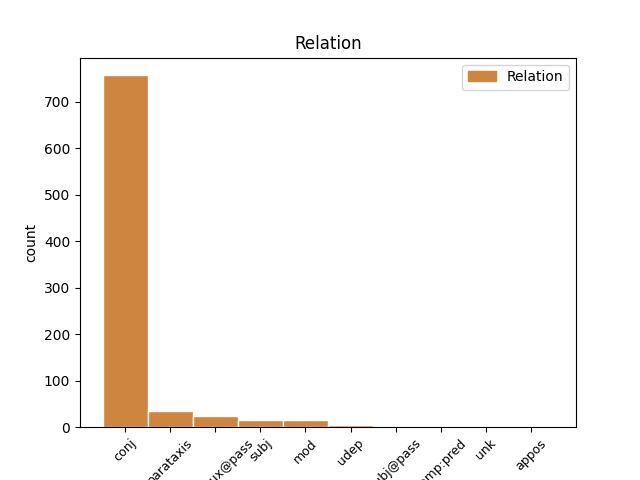
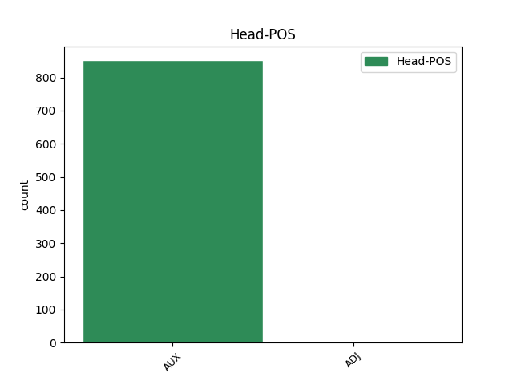
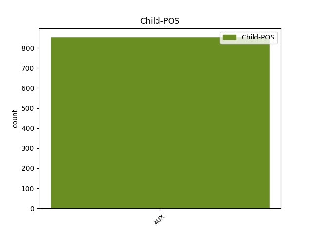

Distribution of features within this leaf



Agreement Rules sorted by frequency.
- When the dependent token is the conjunct(conj) of the head token, and the head token is AUX and the dependent token is AUX.
1 Sám _ _ _ _ 0 _ _ _
2 Popper _ _ _ _ 0 _ _ _
3 flirtuje _ _ _ _ 0 _ _ _
4 s _ _ _ _ 0 _ _ _
5 metafyzikou _ _ _ _ 0 _ _ _
6 , _ _ _ _ 0 _ _ _
7 když _ _ _ _ 0 _ _ _
8 tvrdí _ _ _ _ 0 _ _ _
9 : _ _ _ _ 0 _ _ _
10 " _ _ _ _ 0 _ _ _
11 Vědecký _ _ _ _ 0 _ _ _
12 objev _ _ _ _ 0 _ _ _
13 je _ _ _ _ 0 _ _ _
14 nemožný _ _ _ _ 0 _ _ _
15 bez _ _ _ _ 0 _ _ _
16 víry _ _ _ _ 0 _ _ _
17 v _ _ _ _ 0 _ _ _
18 myšlenky _ _ _ _ 0 _ _ _
19 čistě _ _ _ _ 0 _ _ _
20 spekulativní _ _ _ _ 0 _ _ _
21 povahy _ _ _ _ 0 _ _ _
22 . _ _ _ _ 0 _ _ _
23 . _ _ _ _ 0 _ _ _
24 . _ _ _ _ 0 _ _ _
25 víry _ _ _ _ 0 _ _ _
26 , _ _ _ _ 0 _ _ _
27 která _ _ _ _ 0 _ _ _
28 je být AUX VB-S---3P-AA--- Mood=Ind|Number=Sing|Person=3|Polarity=Pos|Tense=Pres|VerbForm=Fin|Voice=Act 0 _ _ _
29 zcela _ _ _ _ 0 _ _ _
30 nepodložená _ _ _ _ 0 _ _ _
31 z _ _ _ _ 0 _ _ _
32 hlediska _ _ _ _ 0 _ _ _
33 vědy _ _ _ _ 0 _ _ _
34 , _ _ _ _ 0 _ _ _
35 a _ _ _ _ 0 _ _ _
36 je být AUX VB-S---3P-AA--- Mood=Ind|Number=Sing|Person=3|Polarity=Pos|Tense=Pres|VerbForm=Fin|Voice=Act 28 conj _ _
37 proto _ _ _ _ 0 _ _ _
38 , _ _ _ _ 0 _ _ _
39 do _ _ _ _ 0 _ _ _
40 jisté _ _ _ _ 0 _ _ _
41 míry _ _ _ _ 0 _ _ _
42 , _ _ _ _ 0 _ _ _
43 " _ _ _ _ 0 _ _ _
44 metafyzická _ _ _ _ 0 _ _ _
45 " _ _ _ _ 0 _ _ _
46 . _ _ _ _ 0 _ _ _
1 Protože _ _ _ _ 0 _ _ _
2 v _ _ _ _ 0 _ _ _
3 moderní _ _ _ _ 0 _ _ _
4 industriální _ _ _ _ 0 _ _ _
5 společnosti _ _ _ _ 0 _ _ _
6 ( _ _ _ _ 0 _ _ _
7 alespoň _ _ _ _ 0 _ _ _
8 zatím _ _ _ _ 0 _ _ _
9 ) _ _ _ _ 0 _ _ _
10 převládá _ _ _ _ 0 _ _ _
11 téměř _ _ _ _ 0 _ _ _
12 všeobjímající _ _ _ _ 0 _ _ _
13 rozrůstání _ _ _ _ 0 _ _ _
14 a _ _ _ _ 0 _ _ _
15 zřetězování _ _ _ _ 0 _ _ _
16 ekleziomorfních _ _ _ _ 0 _ _ _
17 struktur _ _ _ _ 0 _ _ _
18 a _ _ _ _ 0 _ _ _
19 jejich _ _ _ _ 0 _ _ _
20 analogií _ _ _ _ 0 _ _ _
21 a _ _ _ _ 0 _ _ _
22 typicky _ _ _ _ 0 _ _ _
23 mužské _ _ _ _ 0 _ _ _
24 vzorce _ _ _ _ 0 _ _ _
25 chování _ _ _ _ 0 _ _ _
26 jsou být AUX VB-P---3P-AA--- Mood=Ind|Number=Plur|Person=3|Polarity=Pos|Tense=Pres|VerbForm=Fin|Voice=Act 0 _ _ _
27 vytlačeny _ _ _ _ 0 _ _ _
28 z _ _ _ _ 0 _ _ _
29 reálného _ _ _ _ 0 _ _ _
30 světa _ _ _ _ 0 _ _ _
31 tak _ _ _ _ 0 _ _ _
32 nanejvýš _ _ _ _ 0 _ _ _
33 do _ _ _ _ 0 _ _ _
34 filmových _ _ _ _ 0 _ _ _
35 seriálů _ _ _ _ 0 _ _ _
36 ( _ _ _ _ 0 _ _ _
37 bojující _ _ _ _ 0 _ _ _
38 armáda _ _ _ _ 0 _ _ _
39 jako _ _ _ _ 0 _ _ _
40 jejich _ _ _ _ 0 _ _ _
41 pokleslá _ _ _ _ 0 _ _ _
42 realizace _ _ _ _ 0 _ _ _
43 je být AUX VB-S---3P-AA--- Mood=Ind|Number=Sing|Person=3|Polarity=Pos|Tense=Pres|VerbForm=Fin|Voice=Act 26 parataxis _ _
44 záležitostí _ _ _ _ 0 _ _ _
45 příliš _ _ _ _ 0 _ _ _
46 riskantní _ _ _ _ 0 _ _ _
47 ) _ _ _ _ 0 _ _ _
48 , _ _ _ _ 0 _ _ _
49 vznáší _ _ _ _ 0 _ _ _
50 se _ _ _ _ 0 _ _ _
51 nezrealizovaná _ _ _ _ 0 _ _ _
52 část _ _ _ _ 0 _ _ _
53 těchto _ _ _ _ 0 _ _ _
54 etologických _ _ _ _ 0 _ _ _
55 úkonů _ _ _ _ 0 _ _ _
56 nad _ _ _ _ 0 _ _ _
57 celou _ _ _ _ 0 _ _ _
58 společností _ _ _ _ 0 _ _ _
59 jako _ _ _ _ 0 _ _ _
60 hustá _ _ _ _ 0 _ _ _
61 mlha _ _ _ _ 0 _ _ _
62 a _ _ _ _ 0 _ _ _
63 vede _ _ _ _ 0 _ _ _
64 celou _ _ _ _ 0 _ _ _
65 společnost _ _ _ _ 0 _ _ _
66 k _ _ _ _ 0 _ _ _
67 jejich _ _ _ _ 0 _ _ _
68 napodobování _ _ _ _ 0 _ _ _
69 . _ _ _ _ 0 _ _ _
1 Jakkoli _ _ _ _ 0 _ _ _
2 pestré _ _ _ _ 0 _ _ _
3 jsou být AUX VB-P---3P-AA--- Mood=Ind|Number=Plur|Person=3|Polarity=Pos|Tense=Pres|VerbForm=Fin|Voice=Act 9 mod _ _
4 tvary _ _ _ _ 0 _ _ _
5 a _ _ _ _ 0 _ _ _
6 struktury _ _ _ _ 0 _ _ _
7 organismů _ _ _ _ 0 _ _ _
8 , _ _ _ _ 0 _ _ _
9 jsou být AUX VB-P---3P-AA--- Mood=Ind|Number=Plur|Person=3|Polarity=Pos|Tense=Pres|VerbForm=Fin|Voice=Act 0 _ _ _
10 konec _ _ _ _ 0 _ _ _
11 konců _ _ _ _ 0 _ _ _
12 důsledkem _ _ _ _ 0 _ _ _
13 struktury _ _ _ _ 0 _ _ _
14 a _ _ _ _ 0 _ _ _
15 agregace _ _ _ _ 0 _ _ _
16 určitých _ _ _ _ 0 _ _ _
17 typů _ _ _ _ 0 _ _ _
18 molekul _ _ _ _ 0 _ _ _
19 - _ _ _ _ 0 _ _ _
20 převážně _ _ _ _ 0 _ _ _
21 makromolekul _ _ _ _ 0 _ _ _
22 . _ _ _ _ 0 _ _ _
1 Nejpozději _ _ _ _ 0 _ _ _
2 od _ _ _ _ 0 _ _ _
3 doby _ _ _ _ 0 _ _ _
4 , _ _ _ _ 0 _ _ _
5 kdy _ _ _ _ 0 _ _ _
6 američtí _ _ _ _ 0 _ _ _
7 astronauté _ _ _ _ 0 _ _ _
8 přivezli _ _ _ _ 0 _ _ _
9 z _ _ _ _ 0 _ _ _
10 Měsíce _ _ _ _ 0 _ _ _
11 vzorky _ _ _ _ 0 _ _ _
12 měsíčních _ _ _ _ 0 _ _ _
13 hornin _ _ _ _ 0 _ _ _
14 , _ _ _ _ 0 _ _ _
15 je být AUX VB-S---3P-AA--- Mood=Ind|Number=Sing|Person=3|Polarity=Pos|Tense=Pres|VerbForm=Fin|Voice=Act 0 _ _ _
16 však _ _ _ _ 0 _ _ _
17 jasno _ _ _ _ 0 _ _ _
18 : _ _ _ _ 0 _ _ _
19 krátery _ _ _ _ 0 _ _ _
20 na _ _ _ _ 0 _ _ _
21 Měsíci _ _ _ _ 0 _ _ _
22 jsou být AUX VB-P---3P-AA--- Mood=Ind|Number=Plur|Person=3|Polarity=Pos|Tense=Pres|VerbForm=Fin|Voice=Act 15 subj _ _
23 impaktního _ _ _ _ 0 _ _ _
24 původu _ _ _ _ 0 _ _ _
25 . _ _ _ _ 0 _ _ _
1 Výsledkem _ _ _ _ 0 _ _ _
2 by _ _ _ _ 0 _ _ _
3 nebylo _ _ _ _ 0 _ _ _
4 opakování _ _ _ _ 0 _ _ _
5 třicátých _ _ _ _ 0 _ _ _
6 let _ _ _ _ 0 _ _ _
7 s _ _ _ _ 0 _ _ _
8 neodvratitelným _ _ _ _ 0 _ _ _
9 náběhem _ _ _ _ 0 _ _ _
10 ke _ _ _ _ 0 _ _ _
11 konfrontaci _ _ _ _ 0 _ _ _
12 , _ _ _ _ 0 _ _ _
13 s _ _ _ _ 0 _ _ _
14 čím _ _ _ _ 0 _ _ _
15 však _ _ _ _ 0 _ _ _
16 by _ _ _ _ 0 _ _ _
17 bylo být AUX VpNS---XR-AA--- Gender=Neut|Number=Sing|Polarity=Pos|Tense=Past|VerbForm=Part|Voice=Act 0 _ _ _
18 nutno _ _ _ _ 0 _ _ _
19 počítat _ _ _ _ 0 _ _ _
20 , _ _ _ _ 0 _ _ _
21 by _ _ _ _ 0 _ _ _
22 byl být AUX VpYS---XR-AA--- Gender=Masc|Number=Sing|Polarity=Pos|Tense=Past|VerbForm=Part|Voice=Act 17 comp:pred _ _
23 pocit _ _ _ _ 0 _ _ _
24 frustrace _ _ _ _ 0 _ _ _
25 , _ _ _ _ 0 _ _ _
26 vlna _ _ _ _ 0 _ _ _
27 obezřetnosti _ _ _ _ 0 _ _ _
28 a _ _ _ _ 0 _ _ _
29 vyvedení _ _ _ _ 0 _ _ _
30 Evropy _ _ _ _ 0 _ _ _
31 z _ _ _ _ 0 _ _ _
32 rovnováhy _ _ _ _ 0 _ _ _
33 , _ _ _ _ 0 _ _ _
34 jež _ _ _ _ 0 _ _ _
35 by _ _ _ _ 0 _ _ _
36 další _ _ _ _ 0 _ _ _
37 Maastricht _ _ _ _ 0 _ _ _
38 odsunuly _ _ _ _ 0 _ _ _
39 na _ _ _ _ 0 _ _ _
40 neurčito _ _ _ _ 0 _ _ _
41 . _ _ _ _ 0 _ _ _
1 Dobře _ _ _ _ 0 _ _ _
2 fungující fungující ADJ AGNP1-----A---- Aspect=Imp|Case=Nom|Gender=Neut|Number=Plur|Polarity=Pos|Tense=Pres|VerbForm=Part|Voice=Act 0 _ _ _
3 , _ _ _ _ 0 _ _ _
4 která _ _ _ _ 0 _ _ _
5 jsou být AUX VB-P---3P-AA--- Mood=Ind|Number=Plur|Person=3|Polarity=Pos|Tense=Pres|VerbForm=Fin|Voice=Act 2 unk _ _
6 motorem _ _ _ _ 0 _ _ _
7 k _ _ _ _ 0 _ _ _
8 prosperitě _ _ _ _ 0 _ _ _
9 firmy _ _ _ _ 0 _ _ _
10 , _ _ _ _ 0 _ _ _
11 jsou _ _ _ _ 0 _ _ _
12 výjimkou _ _ _ _ 0 _ _ _
13 . _ _ _ _ 0 _ _ _
1 Bude být AUX VB-S---3F-AA--- Mood=Ind|Number=Sing|Person=3|Polarity=Pos|Tense=Fut|VerbForm=Fin|Voice=Act 0 _ _ _
2 se _ _ _ _ 0 _ _ _
3 započítávat _ _ _ _ 0 _ _ _
4 do _ _ _ _ 0 _ _ _
5 kombinace _ _ _ _ 0 _ _ _
6 se _ _ _ _ 0 _ _ _
7 sjezdem _ _ _ _ 0 _ _ _
8 , _ _ _ _ 0 _ _ _
9 který _ _ _ _ 0 _ _ _
10 se _ _ _ _ 0 _ _ _
11 bude být AUX VB-S---3F-AA--- Mood=Ind|Number=Sing|Person=3|Polarity=Pos|Tense=Fut|VerbForm=Fin|Voice=Act 1 subj@pass _ _
12 konat _ _ _ _ 0 _ _ _
13 11 _ _ _ _ 0 _ _ _
14 . _ _ _ _ 0 _ _ _
15 ledna _ _ _ _ 0 _ _ _
16 v _ _ _ _ 0 _ _ _
17 Ga _ _ _ _ 0 _ _ _
18 - _ _ _ _ 0 _ _ _
19 Pa _ _ _ _ 0 _ _ _
20 na _ _ _ _ 0 _ _ _
21 sjezdovce _ _ _ _ 0 _ _ _
22 Kandahar _ _ _ _ 0 _ _ _
23 . _ _ _ _ 0 _ _ _
1 Asociace _ _ _ _ 0 _ _ _
2 má _ _ _ _ 0 _ _ _
3 pro _ _ _ _ 0 _ _ _
4 své _ _ _ _ 0 _ _ _
5 členy _ _ _ _ 0 _ _ _
6 závazné _ _ _ _ 0 _ _ _
7 dokumenty _ _ _ _ 0 _ _ _
8 , _ _ _ _ 0 _ _ _
9 jako _ _ _ _ 0 _ _ _
10 jsou _ _ _ _ 0 _ _ _
11 stanovy _ _ _ _ 0 _ _ _
12 a _ _ _ _ 0 _ _ _
13 provozní _ _ _ _ 0 _ _ _
14 řád _ _ _ _ 0 _ _ _
15 , _ _ _ _ 0 _ _ _
16 upravující upravující ADJ AGIS1-----A---- Animacy=Inan|Aspect=Imp|Case=Nom|Gender=Masc|Number=Sing|Polarity=Pos|Tense=Pres|VerbForm=Part|Voice=Act 0 _ _ _
17 vztahy _ _ _ _ 0 _ _ _
18 mezi _ _ _ _ 0 _ _ _
19 realitními _ _ _ _ 0 _ _ _
20 kancelářemi _ _ _ _ 0 _ _ _
21 a _ _ _ _ 0 _ _ _
22 jejich _ _ _ _ 0 _ _ _
23 klienty _ _ _ _ 0 _ _ _
24 ( _ _ _ _ 0 _ _ _
25 např _ _ _ _ 0 _ _ _
26 . _ _ _ _ 0 _ _ _
27 doporučená _ _ _ _ 0 _ _ _
28 sazba _ _ _ _ 0 _ _ _
29 provize _ _ _ _ 0 _ _ _
30 je být AUX VB-S---3P-AA--- Mood=Ind|Number=Sing|Person=3|Polarity=Pos|Tense=Pres|VerbForm=Fin|Voice=Act 16 parataxis _ _
31 3 _ _ _ _ 0 _ _ _
32 - _ _ _ _ 0 _ _ _
33 6 _ _ _ _ 0 _ _ _
34 procent _ _ _ _ 0 _ _ _
35 z _ _ _ _ 0 _ _ _
36 prodejní _ _ _ _ 0 _ _ _
37 ceny _ _ _ _ 0 _ _ _
38 ) _ _ _ _ 0 _ _ _
39 , _ _ _ _ 0 _ _ _
40 a _ _ _ _ 0 _ _ _
41 dále _ _ _ _ 0 _ _ _
42 pravidla _ _ _ _ 0 _ _ _
43 soutěže _ _ _ _ 0 _ _ _
44 a _ _ _ _ 0 _ _ _
45 pravidla _ _ _ _ 0 _ _ _
46 obchodní _ _ _ _ 0 _ _ _
47 spolupráce _ _ _ _ 0 _ _ _
48 . _ _ _ _ 0 _ _ _
1 O _ _ _ _ 0 _ _ _
2 jeho _ _ _ _ 0 _ _ _
3 obsahu _ _ _ _ 0 _ _ _
4 vypovídá _ _ _ _ 0 _ _ _
5 následující následující ADJ AGNS1-----A---- Aspect=Imp|Case=Nom|Gender=Neut|Number=Sing|Polarity=Pos|Tense=Pres|VerbForm=Part|Voice=Act 0 _ _ _
6 : _ _ _ _ 0 _ _ _
7 Mexiko _ _ _ _ 0 _ _ _
8 je být AUX VB-S---3P-AA--- Mood=Ind|Number=Sing|Person=3|Polarity=Pos|Tense=Pres|VerbForm=Fin|Voice=Act 5 appos _ _
9 zmíněno _ _ _ _ 0 _ _ _
10 devětkrát _ _ _ _ 0 _ _ _
11 , _ _ _ _ 0 _ _ _
12 Maďarsko _ _ _ _ 0 _ _ _
13 sedmkrát _ _ _ _ 0 _ _ _
14 , _ _ _ _ 0 _ _ _
15 Polsko _ _ _ _ 0 _ _ _
16 , _ _ _ _ 0 _ _ _
17 bývalý _ _ _ _ 0 _ _ _
18 SSSR _ _ _ _ 0 _ _ _
19 a _ _ _ _ 0 _ _ _
20 ČR _ _ _ _ 0 _ _ _
21 pětkrát _ _ _ _ 0 _ _ _
22 a _ _ _ _ 0 _ _ _
23 jiné _ _ _ _ 0 _ _ _
24 země _ _ _ _ 0 _ _ _
25 třikrát _ _ _ _ 0 _ _ _
26 . _ _ _ _ 0 _ _ _
1 Ovčáčkovy _ _ _ _ 0 _ _ _
2 plastiky _ _ _ _ 0 _ _ _
3 často _ _ _ _ 0 _ _ _
4 evokují _ _ _ _ 0 _ _ _
5 dojem _ _ _ _ 0 _ _ _
6 stél _ _ _ _ 0 _ _ _
7 , _ _ _ _ 0 _ _ _
8 jejichž _ _ _ _ 0 _ _ _
9 podtext _ _ _ _ 0 _ _ _
10 je být AUX VB-S---3P-AA--- Mood=Ind|Number=Sing|Person=3|Polarity=Pos|Tense=Pres|VerbForm=Fin|Voice=Act 0 _ _ _
11 místy _ _ _ _ 0 _ _ _
12 až _ _ _ _ 0 _ _ _
13 ironizující _ _ _ _ 0 _ _ _
14 : _ _ _ _ 0 _ _ _
15 jsou být AUX VB-P---3P-AA--- Mood=Ind|Number=Plur|Person=3|Polarity=Pos|Tense=Pres|VerbForm=Fin|Voice=Act 10 udep _ _
16 zde _ _ _ _ 0 _ _ _
17 totiž _ _ _ _ 0 _ _ _
18 do _ _ _ _ 0 _ _ _
19 těsné _ _ _ _ 0 _ _ _
20 blízkosti _ _ _ _ 0 _ _ _
21 kladeny _ _ _ _ 0 _ _ _
22 uhrančivost _ _ _ _ 0 _ _ _
23 s _ _ _ _ 0 _ _ _
24 banalitou _ _ _ _ 0 _ _ _
25 , _ _ _ _ 0 _ _ _
26 tajemství _ _ _ _ 0 _ _ _
27 s _ _ _ _ 0 _ _ _
28 mechanismem _ _ _ _ 0 _ _ _
29 . _ _ _ _ 0 _ _ _
Disagree Examples:
1 Je být AUX VB-S---3P-AA--- Mood=Ind|Number=Sing|Person=3|Polarity=Pos|Tense=Pres|VerbForm=Fin|Voice=Act 0 _ _ _
2 to _ _ _ _ 0 _ _ _
3 záměr _ _ _ _ 0 _ _ _
4 , _ _ _ _ 0 _ _ _
5 anebo _ _ _ _ 0 _ _ _
6 zahraniční _ _ _ _ 0 _ _ _
7 banky _ _ _ _ 0 _ _ _
8 nebyly být AUX VpTP---XR-NA--- Animacy=Inan|Gender=Fem,Masc|Number=Plur|Polarity=Neg|Tense=Past|VerbForm=Part|Voice=Act 1 conj _ _
9 ochotny _ _ _ _ 0 _ _ _
10 je _ _ _ _ 0 _ _ _
11 poskytnout _ _ _ _ 0 _ _ _
12 ? _ _ _ _ 0 _ _ _
1 Kromě _ _ _ _ 0 _ _ _
2 toho _ _ _ _ 0 _ _ _
3 jsme být AUX VB-P---1P-AA--- Mood=Ind|Number=Plur|Person=1|Polarity=Pos|Tense=Pres|VerbForm=Fin|Voice=Act 0 _ _ _
4 ukončili _ _ _ _ 0 _ _ _
5 práce _ _ _ _ 0 _ _ _
6 umožňující _ _ _ _ 0 _ _ _
7 použít _ _ _ _ 0 _ _ _
8 další _ _ _ _ 0 _ _ _
9 západní _ _ _ _ 0 _ _ _
10 motor _ _ _ _ 0 _ _ _
11 a _ _ _ _ 0 _ _ _
12 v _ _ _ _ 0 _ _ _
13 této _ _ _ _ 0 _ _ _
14 praxi _ _ _ _ 0 _ _ _
15 budeme být AUX VB-P---1F-AA--- Mood=Ind|Number=Plur|Person=1|Polarity=Pos|Tense=Fut|VerbForm=Fin|Voice=Act 3 conj _ _
16 pokračovat _ _ _ _ 0 _ _ _
17 . _ _ _ _ 0 _ _ _
1 S _ _ _ _ 0 _ _ _
2 někým _ _ _ _ 0 _ _ _
3 stačí _ _ _ _ 0 _ _ _
4 promluvit _ _ _ _ 0 _ _ _
5 a _ _ _ _ 0 _ _ _
6 on _ _ _ _ 0 _ _ _
7 si _ _ _ _ 0 _ _ _
8 to _ _ _ _ 0 _ _ _
9 bude být AUX VB-S---3F-AA--- Mood=Ind|Number=Sing|Person=3|Polarity=Pos|Tense=Fut|VerbForm=Fin|Voice=Act 0 _ _ _
10 pro _ _ _ _ 0 _ _ _
11 příště _ _ _ _ 0 _ _ _
12 pamatovat _ _ _ _ 0 _ _ _
13 , _ _ _ _ 0 _ _ _
14 jindy _ _ _ _ 0 _ _ _
15 je být AUX VB-S---3P-AA--- Mood=Ind|Number=Sing|Person=3|Polarity=Pos|Tense=Pres|VerbForm=Fin|Voice=Act 9 conj _ _
16 větším _ _ _ _ 0 _ _ _
17 ponaučením _ _ _ _ 0 _ _ _
18 krácení _ _ _ _ 0 _ _ _
19 prémií _ _ _ _ 0 _ _ _
20 . _ _ _ _ 0 _ _ _
1 Vady _ _ _ _ 0 _ _ _
2 prodávané _ _ _ _ 0 _ _ _
3 věci _ _ _ _ 0 _ _ _
4 musí _ _ _ _ 0 _ _ _
5 kupující _ _ _ _ 0 _ _ _
6 uplatnit _ _ _ _ 0 _ _ _
7 zpravidla _ _ _ _ 0 _ _ _
8 u _ _ _ _ 0 _ _ _
9 prodávajícího prodávající ADJ AGMS2-----A---- Animacy=Anim|Aspect=Imp|Case=Gen|Gender=Masc|Number=Sing|Polarity=Pos|Tense=Pres|VerbForm=Part|Voice=Act 0 _ _ _
10 , _ _ _ _ 0 _ _ _
11 u _ _ _ _ 0 _ _ _
12 kterého _ _ _ _ 0 _ _ _
13 byla být AUX VpQW---XR-AA--- Gender=Fem,Neut|Number=Plur,Sing|Polarity=Pos|Tense=Past|VerbForm=Part|Voice=Act 9 mod _ _
14 vadná _ _ _ _ 0 _ _ _
15 věc _ _ _ _ 0 _ _ _
16 koupena _ _ _ _ 0 _ _ _
17 . _ _ _ _ 0 _ _ _
1 Zanedlouho _ _ _ _ 0 _ _ _
2 jsem být AUX VB-S---1P-AA--- Mood=Ind|Number=Sing|Person=1|Polarity=Pos|Tense=Pres|VerbForm=Fin|Voice=Act 0 _ _ _
3 byl být AUX VpYS---XR-AA--- Gender=Masc|Number=Sing|Polarity=Pos|Tense=Past|VerbForm=Part|Voice=Act 2 comp:aux@pass _ _
4 dopisem _ _ _ _ 0 _ _ _
5 vyzván _ _ _ _ 0 _ _ _
6 , _ _ _ _ 0 _ _ _
7 aby _ _ _ _ 0 _ _ _
8 bych _ _ _ _ 0 _ _ _
9 žalobu _ _ _ _ 0 _ _ _
10 doplnil _ _ _ _ 0 _ _ _
11 o _ _ _ _ 0 _ _ _
12 údaje _ _ _ _ 0 _ _ _
13 , _ _ _ _ 0 _ _ _
14 které _ _ _ _ 0 _ _ _
15 jsou _ _ _ _ 0 _ _ _
16 podle _ _ _ _ 0 _ _ _
17 soudu _ _ _ _ 0 _ _ _
18 nutné _ _ _ _ 0 _ _ _
19 . _ _ _ _ 0 _ _ _